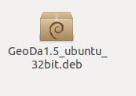

Download GeoDa for Linux
The download will begin immediately after clicking on the links below:
- GeoDa 1.6.7 for 64-bit Ubuntu Linux 12.x, 13.x, and 14.04
- GeoDa 1.6.7 for 32-bit Ubuntu Linux 12.x, 13.x, and 14.04
Installation Instruction
Install GeoDa
Step 1:

Step 2:

In some latest version of Ubuntu (e.g. 13.x), you might see "The package is of bad quality" warning dialog, please just click "Ignore and install".

If you see an error message that reports dependent librareies can't be installed and please check Internet connection. Please run the following command to update Ubuntu's APT server list:
sudo apt-get update
Run GeoDa

Uninstall GeoDa
sudo dpkg --remove geoda
Contact
Questions? Contact us.